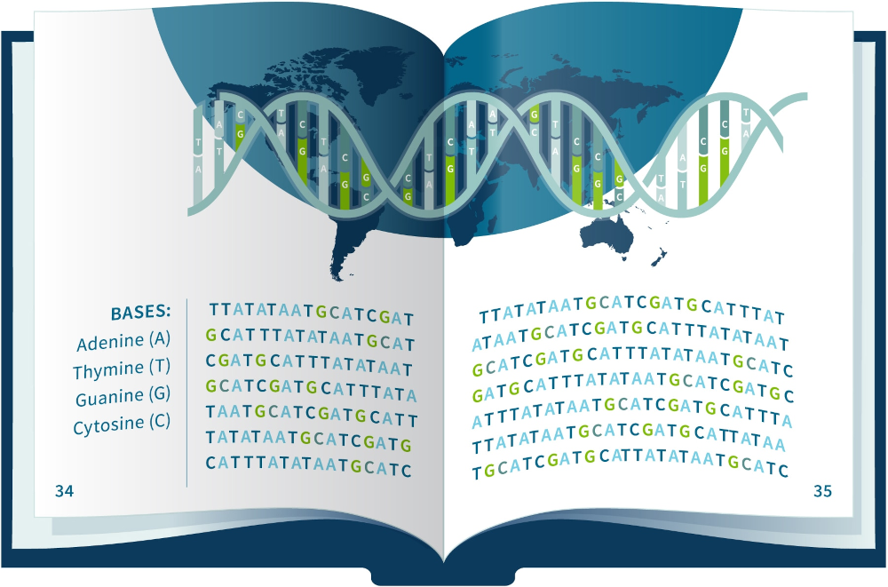

Calculadora Genômica
A sua amiga Filo e você adoram as ciências biológicas e se inscreveram na disciplina de genômica comparativa este semestre. Entretanto, devido a uma forte chuva ontem à noite, o ônibus não passou e você perdeu a primeira aula.
Ao vê-la hoje, Filo pareceu preocupada: ela disse que o professor explicou os conceitos fundamentais e logo encarregou os alunos de, em grupos de dois, implementar suas próprias calculadoras genômicas, capazes de realizar operações comuns como inversão e busca de trechos de interesse. O professor também irá trazer algumas cadeias genômicas reais na próxima aula e cada grupo deverá usar a sua própria calculadora.
Como um(a) excelente programador(a), você sugeriu que começassem o trabalho prontamente! Filo concordou e te entregou as anotações que tinha feito na primeira aula.
Introdução à Genômica Comparativa (Notas da Aula I, 30/02/2024)
Árvore filogenéticas
A biologia evolutiva e a genômica comparativa são campos de pesquisa fundamentais para a biologia contemporânea. Neles, ferramentas como árvores filogenéticas, diagramas que representam as relações evolutivas entre diferentes organismos, são empregadas para elucidar a origem e evolução de características específicas em entidades biológicas, a presença ou ausência de genes de interesse, ou a aquisição de funções biológicas específicas. Além disso, as árvores filogenéticas são cruciais na análise de complexos relacionamentos filogenéticos entre diferentes grupos de organismos, contribuindo para a reconstrução de suas histórias evolutivas.
Sequências genômicas
As árvores filogenéticas são baseadas em comparações de características morfológicas, comportamentais, fisiológicas e, cada vez mais comum, em informações genéticas: sequências de DNA ou proteínas de diferentes espécies. Essas sequências podem ser comparadas e alinhadas para identificar regiões conservadas e divergentes, usadas para inferir a relação evolutiva entre as espécies.

As cadeias de DNA são usualmente representadas por uma sequência (com repetição) dos caracteres C, G, T e A. Por exemplo:
GCGAATTTCCCATACGTCCCTACGGGACGGAC
No contexto deste trabalho, as cadeias de DNA podem ser lineares ou cíclicas (representadas pelos sufixos c0 e c1, respectivamente). No caso de cadeias cíclicas, o último elemento da cadeia possui adjacência com o penúltimo e com o primeiro elemento. Quando nenhum descritor for informado, supõe-se que se trata de uma cadeia linear.
Por exemplo:
GGACGGA # cadeia linear
GCGAATT c0 # cadeia linear
GGGCCTG c1 # cadeia cíclica
Operações sobre genomas
Uma das técnicas utilizadas para comparar sequências de DNA é através da aplicação de diferentes operações para transformar uma sequência em outra. Essas operações são usualmente inspiradas em mutações que podem ocorrer durante o processo evolutivo.
Especificação do Trabalho
Neste trabalho, você deverá implementar uma calculadora genômica. Logo no início, será informado o genoma de referência, representado por uma string contendo os caracteres C, G, T e A. Em seguida, será fornecida uma sequência de operações a serem realizadas sobre a cadeia de referência.
Seu programa deve possibilitar a execução das seguintes operações:
- reverter: dados os índices i e j, reverter a subsequência [i, j] (de i até j, inclusive ambos) do genoma atual.
Ex. 1: Seja i o índice do primeiro C e j=i+3, o genoma '…CGTAGT…' será revertido para '…ATGCGT…'
Ex. 2: Seja i=4 e j=7, o genoma 'AGACGT c1' será revertido para 'TGACGA c1'
Ex. 3: Seja i=5 e j=2, o genoma 'CTACGTG c1' será revertido para 'CGTCGAT c1' - transpor: transpor o genoma linear considerando os índices i, j, k, isto é,
trocar a posição da subsequência iniciada em i e terminada em j com a subsequência iniciada em j+1 e terminada em k.
Ex. 1: Seja i=2, j=5, k=9, então o genoma 'CTCGTAAGCTGA' será transposto para 'CTAGCTCGTAGA' - inserir: combinar o genoma atual com um novo genoma (linear) informado, inserindo esse na i-ésima posição do atual.
Ex. 1: seja 'ATGCGT' o genoma atual, 'CTAG' o genoma informado e i=3, o genoma atual será atualizado para 'ATGCTAGCGT'
Ex. 2: seja 'CGTATT c1' o genoma atual, 'AA' o genoma informado e i=6, o genoma atual será atualizado para 'CGTATTAA' - remover: remover a subsequência [i, j] do genoma atual considerando dois índices i e j informados.
Ex. 1: seja o genoma 'GCGTAT', i=2 e j=4, então o genoma resultante será 'GCT'
Ex. 2: seja o genoma 'AGTG c1', i=2 e j=5, então o genoma resultante será 'AG' - fissão: transforma o genoma atual (cíclico) em genoma linear, por meio do rompimento da adjacência entre o i-ésimo elemento e seu sucessor.
A cadeia gerada deve ser representada tendo o i-ésimo elemento (na cadeia original) como primeiro elemento.
Ex. 1: seja 'ATGCGT c1' o genoma atual e i=2, o genoma será atualizado para 'GCGTAT c0' - fusão: transforma o genoma atual (linear) em um genoma cíclico, por meio da junção entre o primeiro e último elementos da cadeia.
Ex. 1: seja 'CGTACTCACGT c0' o genoma atual, será atualizado para 'CGTACTCACGT c1' - mostrar: exibir o genoma atual para o usuário. O descritor
c0ouc1também deve ser exibido. - buscar: dado um genoma de busca, exibir na tela o
número de vezes em que ele ocorre no genoma atual. O genoma atual não
deve sofrer alterações.
Ex. 1: buscar 'TCGA' em 'CTCGACTCGAGA' deve retornar duas ocorrências (exibir "2")
Ex. 2: buscar 'CCC' em 'ACCCCT' deve retornar uma única ocorrência (exibir "1", não considerar ocorrências com sobreposição com uma ocorrência previamente identificada)
Ex. 3: buscar 'AGT' em 'GTCGAGTCAGTA c1' deve retornar três ocorrências (exibir "3").
Seu programa deve finalizar ao receber o comando "sair".
A entrada do seu programa consiste em uma string,
representando o genoma de referência, e uma sequência de comandos a
serem executados sobre o genoma. Esses comandos são separados por
quebras de linha (o caractere \n), onde cada comando descreve uma operação a ser executada e seus parâmetros.
A tabela abaixo descreve os comandos que serão fornecidos ao programa, seus parâmetros e um exemplo de como eles seriam apresentados. Na segunda coluna, após o nome do parâmetro, indicamos o tipo dele (apenas para deixar claro), separando o nome e o tipo por ':'.
| Operação | Parâmetros | Exemplo |
|---|---|---|
| reverter | i:int j:int | reverter 2 5 |
| transpor | i:int j:int k:int | transpor 0 2 4 |
| inserir | g:str i:int | inserir CTAG 3 |
| remover | i:int j:int | remover 2 4 |
| fissao | i:int | fissao 4 |
| fusao | fusao | |
| mostrar | mostrar | |
| buscar | g:str | buscar TG |
Além disso, algumas regras são importantes:
- Os índices i, j e k serão sempre inteiros não negativos;
- Para genomas lineares:
- Se um dos índices i, j ou k for igual ou maior que o tamanho da sequência
S, o maior índice válido deverá ser considerado. Isto é,min(i, tamanho(S))para a inserção emin(i, tamanho(S)-1)para as demais operações; - Nenhuma alteração deve ser feita no genoma atual se o início (índice i) da reversão, transposição ou remoção for igual ou maior do que o tamanho do genoma (corolário da regra 2);
- Nenhuma alteração deve ser feita no genoma atual se o meio da transposição (índice j) for igual ou maior do que o tamanho total do genoma (corolário da regra 2);
- Se um dos índices i, j ou k for igual ou maior que o tamanho da sequência
- Para genomas cíclicos:
- Para as operações de inserção e remoção, se um dos índices i ou j for igual ou maior que o tamanho da sequência
S, a maior posição válida deverá ser considerada. Isto é,min(j, tamanho(S))para a inserção emin(j, tamanho(S)-1)para a remoção; - Para todas as demais operações, se um dos índices i, j ou k for igual ou maior ao tamanho da sequência
S, a posição cíclica (i mod tamanho(S)) deverá ser considerada;
- Para as operações de inserção e remoção, se um dos índices i ou j for igual ou maior que o tamanho da sequência
Seu programa deve produzir saídas nas (e somente nas) execuções das operações buscar e mostrar. Na primeira, um número inteiro deve ser impresso na tela, indicando o número de ocorrências encontradas. Por outro lado, o genoma atual completo deve ser exibido ao receber o comando mostrar.
Exemplos de entradas e saídas esperadas pelo seu programa:
Teste 01
ATCGTAGTG
reverter 2 5
mostrar
buscar TG
sair
ATATGCGTG c0
2
Teste 02
CTCGTAAGCTGA
mostrar
buscar TAGA
transpor 2 5 9
mostrar
buscar TAGA
sair
CTCGTAAGCTGA c0
0
CTAGCTCGTAGA c0
1
Teste 03
TAGTCGTGTAGTGCTGTAGATGTGCTGTGTAGACGTCGTCGTGTCTCG
mostrar
inserir CTAG 3
mostrar
buscar TCGT
buscar TAG
inserir TCGTCGTC 1
mostrar
buscar TAG
buscar TGCTG
inserir TGC 60
mostrar
buscar TGCTG
sair
TAGTCGTGTAGTGCTGTAGATGTGCTGTGTAGACGTCGTCGTGTCTCG c0
TAGCTAGTCGTGTAGTGCTGTAGATGTGCTGTGTAGACGTCGTCGTGTCTCG c0
2
5
TTCGTCGTCAGCTAGTCGTGTAGTGCTGTAGATGTGCTGTGTAGACGTCGTCGTGTCTCG c0
4
2
TTCGTCGTCAGCTAGTCGTGTAGTGCTGTAGATGTGCTGTGTAGACGTCGTCGTGTCTCGTGC c0
2
Código Base
No arquivo auxiliar lab08.py você irá encontrar um código base para dar início ao processo de elaboração deste laboratório.
Orientações
- Veja aqui a página de submissão da tarefa.
- O arquivo a ser submetido deve se chamar lab08.py.
- No link "Arquivos auxiliares" há um arquivo compactado (aux08.zip) que contém todos os arquivos de testes abertos (entradas e saídas esperadas).
- O laboratório é composto de 10 testes abertos e 10 testes fechados.
- O limite máximo será de 20 submissões.
- Acesse o sistema SuSy com seu RA (apenas números) e a senha que você utiliza para fazer acesso ao sistema da DAC.
- Você deve seguir as instruções de submissão descritas no enunciado.
- Serão considerados apenas os resultados da última submissão.
- Esta tarefa tem peso 3.
- O prazo final para submissão é dia 19/05/2024 (domingo).